O microfone foi posicionado apontado para o centro do cone do woofer, seguindo distância máxima recomendada por Keele [1] para medição Near Field considerando o diâmetro aproximado do woofer rW = 11,18cm, ou seja, dNF ≤ 1,1cm.
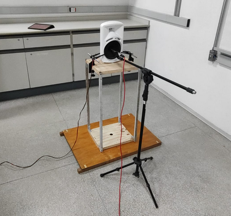 Figura 1: posicionamento do microfone para medição Near Field do woofer.
Para efetuar a medição da resposta do alto falante no software REW, o ganho foi ajustado para obter um nível de SPL abaixo do nível de clip do pré amplificador, porém ainda mantendo o nível bem acima do mínimo indicado pelo software para uma boa relação sinal-ruído da medição.
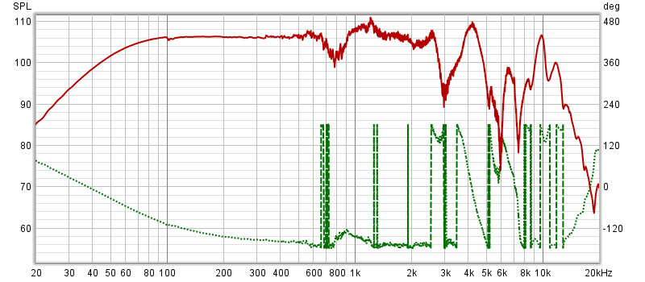 Figura 2: resposta Near Field de frequência e fase obtida para o woofer.
Nota-se que ocorrem nulos a cada frequência com comprimento de onda múltiplo do raio do woofer, conforme descrito por Keele [1]: fnulo = k x c / rW fnulo = k x 343 / 0,1118 fnulo = k x 3068 Hz
Acima de frequências com comprimento de onda menores que o raio do cone, este deixa de agir conforme o modelo de pistão infinitamente rígido, e uma parte da energia vibra a superfície do cone do alto falante. Os modos de ressonância da superfície produzem diversos radiadores menores distribuídos com fases diferentes, o que produz padrões de interferência que variam bruscamente em função da frequência. Por isso se observa um “engrossamento” da linha da resposta acima .
Foi também efetuada uma medição próxima ao duto. O posicionamento do microfone pode ser observado na Figura 3, e a resposta medida na Figura 4.
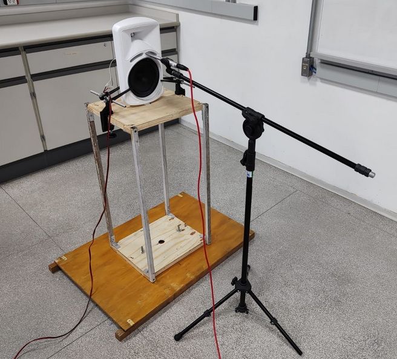 Figura 3: posicionamento do microfone para medição Near Field da saída do duto.
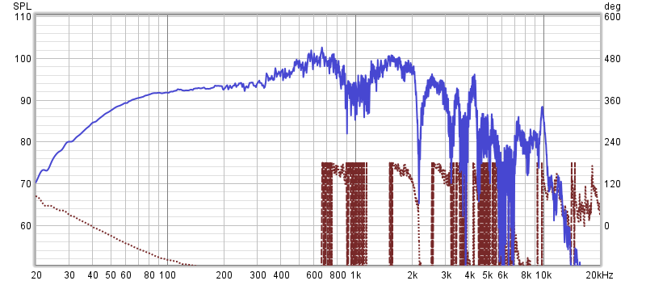 Figura 4: resposta Near Field de frequência e fase obtida na saída do duto.
Para fins de comparação, a Figura 5 contém as respostas das duas medições.
 Figura 5: comparação das respostas Near Field em frente ao woofer (vermelho) e em frente ao duto (azul).
Figura 5: comparação das respostas Near Field em frente ao woofer (vermelho) e em frente ao duto (azul).
Uma caixa bass reflex é um sistema ressonante de 4ª ordem. Como a caixa acústica estava aberta, o alto-falante opera como um sistema de 1ª ordem, não entrando em ressonância com o duto. Assim, o que se obteve foi uma resposta do woofer similar à Near Field, porém com menor SPL devido ao afastamento do centro, e com mais irregularidades. Com a caixa fechada provavelmente veríamos um pico de intensidade na frequência de ressonância do duto.
Da mesma forma, foi obtida a resposta Near Field do tweeter dentro da guia de onda, posicionando-se o microfone o mais próximo possível do domo. Como havia um phase plug em frente ao tweeter, não foi possível medir a distância ao domo, aproximando-se o microfone até quase encostar no phase plug.
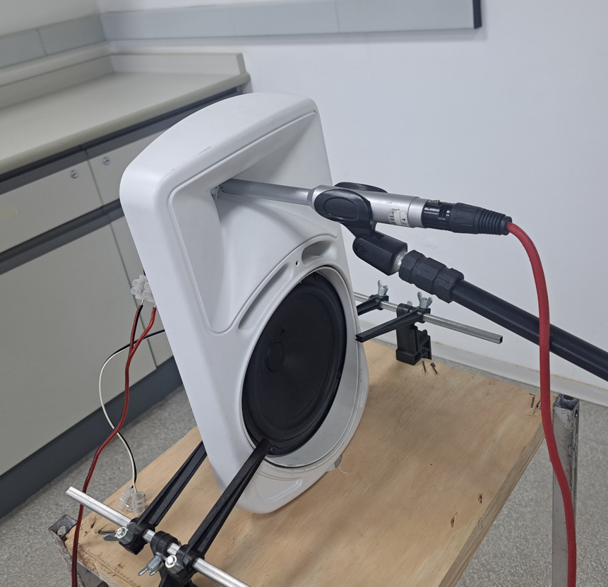 Figura 6: posicionamento do microfone para medição Near Field do tweeter.
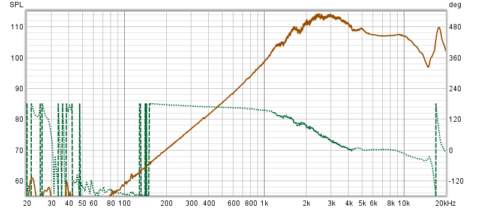 Figura 7: resposta Near Field de frequência e fase obtida para o tweeter.
Observa-se que a banda passante inicia acima de 1kHz, e abaixo disso cai a 12dB/8ª. Como a resposta foi obtida dentro da guia de onda, teremos uma ideia melhor da emissão do sistema formado por tweeter e guia de onda na resposta Far Fied.
###e. Medições Far-Field
Foram realizadas medições Far Field com o microfone mantido no eixo axial do do woofer, mas agora a 1m de distância. O ganho do microfone e do amplificador foram alterados durante a calibração do REW para manter o nível do sinal com boa SNR, e portanto não é possível considerar a diferença das intensidades medidas.
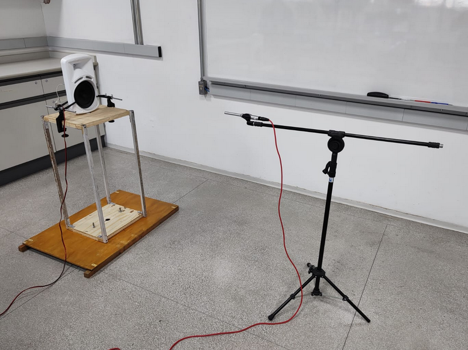 Figura 8: posicionamento do microfone a 1m do wooder para medição da resposta Far Field.
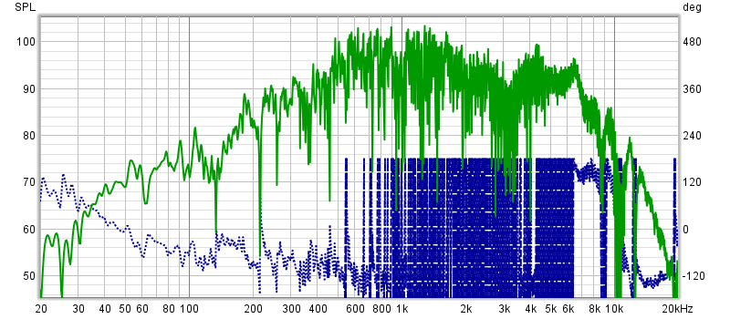 Figura 9: resposta Far Field de frequência e fase obtida para o woofer.
Pode-se observar na medição Far Field uma grande variação devido às inúmeras interferências produzidas por reflexões na sala, produzindo efeito pente. Para melhor leitura da tendência da resposta, foi aplicado smoothing de ⅓ de oitava, obtendo-se a curva apresentada na Figura 10.
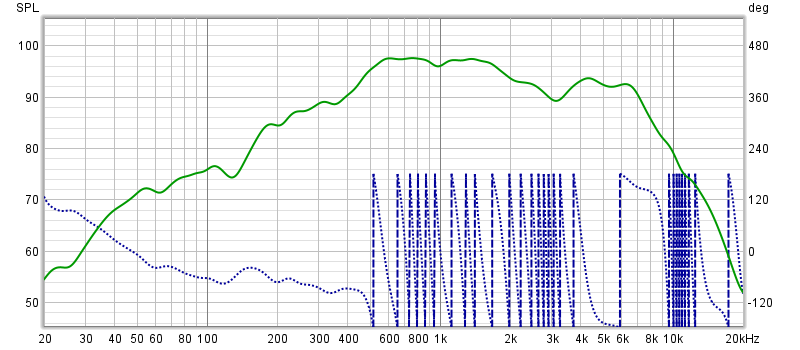 Figura 10: resposta Far Field de frequência e fase obtida para o woofer - smoothing de ⅓ de oitava.
Nota-se uma uma queda de aproximadamente 6dB/8ª abaixo de 600Hz, conforme esperado para a resposta de um dipolo acústico [2].
Para fins de comparação, estão plotadas juntas na Figura 11 as respostas Near Field e Far Field do woofer:
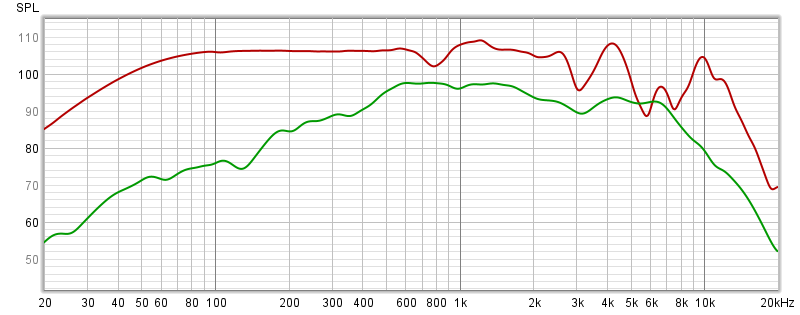 Figura 11: resposta Near Field (vermelho) e Far Field (verde) do woofer - smoothing de ⅙ de oitava. As duas medições tiveram ganhos individuais diferentes, não representando o nível real da diferença de intensidade.
Sabe-se que há uma relação inversa de proporcionalidade da pressão sonora com a distância, não representada na medição.
Keele [1] demonstra que a correspondência das duas medidas vale até uma frequência limite na medida Near Field:
flim = 10922 / Dpol flim = 4300 / 8 flim = 537,5 Hz
Assim, para obter a resposta completa do woofer, uma curva de resposta foi produzida utilizando-se a resposta Near Field até a flim , e desta frequência para cima a resposta Far Field. Como a resposta Far Field do woofer operando em dipolo cai abaixo de 600Hz, a flim utilizada para dividir os gráficos foi de 600Hz, havendo portanto algum erro entre a flim real de 537,5Hz e a flim usada de 600Hz, considerado desprezível. Dessa forma, a curva obtida na Figura 12 deve representar a resposta do woofer em baffle infinito (“half space”, ou espaço 2π).
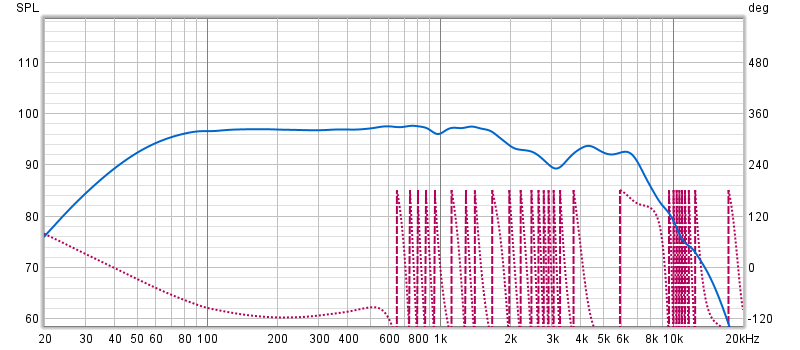 Figura 12: curva obtida pela junção das respostas Near Field e Far Field em 600Hz.
Para o tweeter, também foi aferida a resposta Far Field, a 1m de distância, com a resposta de frequência e fase apresentada na Figura 13.
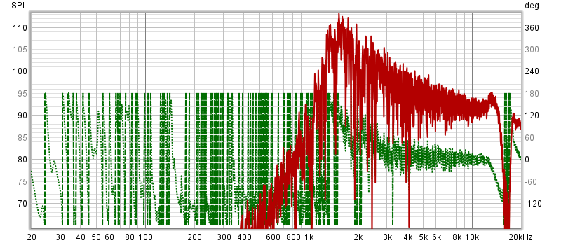 Figura 13: resposta Far Field de frequência e fase obtida para o tweeter.
O excesso de interferências das reflexões da sala dificultou da mesma forma a visualizaçao da tendência da resposta, sendo então aplicado smoothing de ⅙ de oitava para melhor visualização.
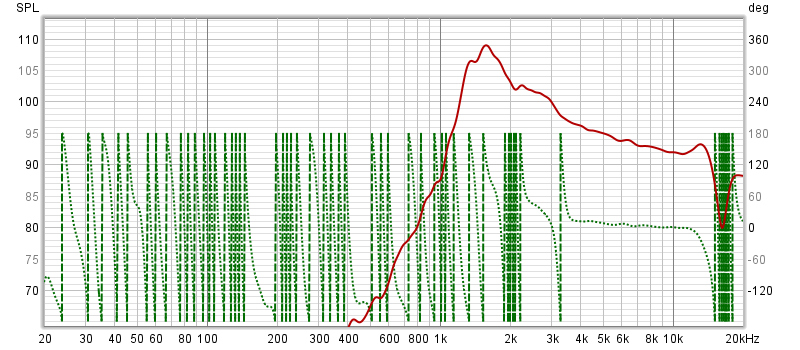 Figura 14: resposta Far Field de frequência e fase obtida para o tweeter - smoothing de ⅙ de oitava.
Como não foi possível determinar o diâmetro do tweeter, além dele estar acoplado a uma guia de onda, não foi feita a junção dos gráficos Near Field e Far Field como para o woofer. A Figura 14 mostra as duas respostas de frequência para fins de comparação.
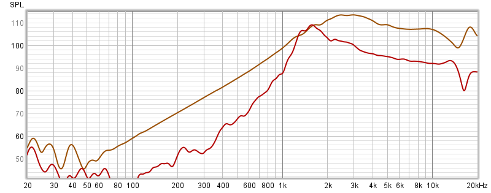 Figura 15: resposta Near Field (marrom) e Far Field (vermeho) do tweeter - smoothing de ⅙ de oitava. As duas medições tiveram ganhos individuais diferentes, não representando o nível real da diferença de intensidade.
O tweeter apresenta banda passante acima de 1kHz, mantendo até 20kHz, apesar do pico e do vale em torno de 15kHz devido a provável ressonância na guia de onda.
Na questão 5, foram interligados três grupos contendo três dispositivos de reprodução sonora, conectados sequencialmente (três dispositivos), e em seguida, paralelamente (três grupos), formando um padrão de disposição em grade 3x3, conforme exemplificado na imagem a seguir.

Para esta etapa foi usado um amplificador da marca Watson, modelo 2200, cuja potência atingia 600W. Adicionalmente, foi usado um osciloscópio da marca Keysight, modelo DSOX3024T. A conexão entre os dispositivos permitia o monitoramento do sinal amplificado nos âmbitos temporal e de frequência. O sinal de entrada foi gerado por um dispositivo gerador de sinais da marca Tektronix, modelo AFG 3021B, gerando uma forma de onda senoidal com frequência de 1 kHz e amplitude de 3 Vpp. É digno de nota que, embora o relatório recomendava a utilização de um sinal com amplitude de 1 Vpp, os ensaios preliminares revelaram que o sinal gerado não possuía potência suficiente para induzir distorções no sinal amplificado pelo dispositivo, o que conduziu à decisão de elevar a amplitude do sinal para 3 Vpp.
No início do processo experimental, o botão de controle de amplificação do dispositivo de amplificação foi inicialmente ajustado para a configuração de atenuação máxima, e posteriormente, o nível de amplificação foi gradualmente aumentado até que distorções na configuração da forma de onda pudessem ser visualmente detectadas. Uma vez que o ponto de distorção foi identificado, o ajuste do botão foi redefinido para a configuração imediatamente anterior a essa manifestação, a qual, na escala indicadora do amplificador, correspondeu a -1dB, gerando a forma de onda e o espectro apresentados abaixo. 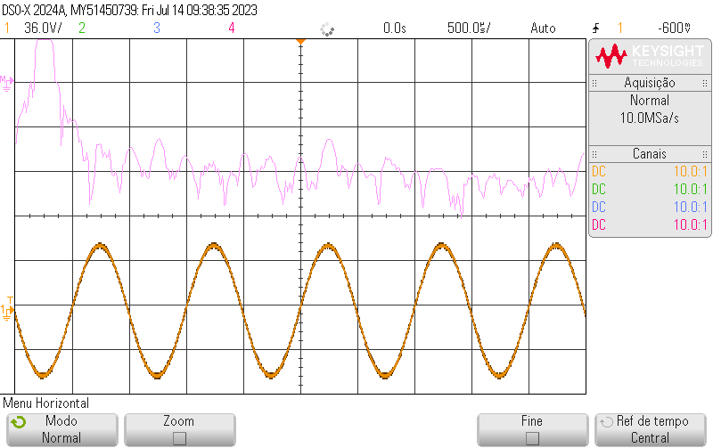
A etapa seguinte da experimentação envolveu a repetição de todos os procedimentos antecedentes empregando um amplificador da marca Unic, da série ZX Storm. As figuras a seguir ilustram o processo de ajuste do nível de amplificação do referido dispositivo, bem como a configuração da forma de onda no domínio temporal e de frequência. Vale mencionar que, ao contrário do dispositivo Wattson, esse amplificador utiliza uma escala graduada de 0 a 10 para a regulação do ganho. Através dos testes realizados, foi constatado que o nível limiar de ganho para que ocorressem distorções no sinal situou-se em torno de 7 na escala desse equipamento. A distorção temporal dos sinais manifestou-se por meio de um leve achatamento nas depressões da onda produzida pelo amplificador Wattson, e nos pontos máximos das ondas geradas pelo segundo amplificador, da marca Unic. 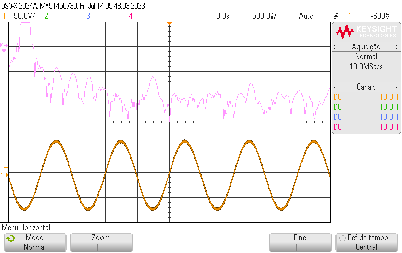

“Fishers of Men”, Rhonda Mitra
O que podemos perceber para esta música é que no microfone AKG C214 o som para os agudos ou para as vozes de cabeça é mais “fechado”, parece existir uma filtragem das frequências maiores ou tentativa de eliminação de eco artificialmente, o que tira um pouco a “beleza” de uma música a capella, enquanto no SM57, os agudos são mais abertos, melhorando a harmonia das vozes, no caso do cantor barítono, aparentemente seus graves e a voz de peito não mudaram muito (comparando os dois microfones).

Comparando um pequeno trecho nos dois microfones, vemos uma pequena mudança na onda, aparentemente no microfone AKG, a duração de um pico é ligeiramente mais curta e aparentemente tem um filtro ali também, pode ser um dos motivos que nos leva a ter essa impressão de som fechado/abafado.
Bachianas Brasileiras nº 2, “O trenzinho caipira”

Podemos ver no trecho final da música que as amplitudes são diferentes:

Nesse caso, o AKG parece dar uma sensação maior de preenchimento da música, diferente da primeira música, talvez para ouvir em um fone de ouvido, a gravação com o AKG seja melhor do que com o Shure.
“Take me Home, Country Roads”, The Petersens
Neste caso, existe um chocalho e um pandeiro meia lua na música, os quais foram praticamente todos cortados pelo microfone AKG, mas ficou bem evidente no microfone Shure. O backing-vocal também foi comprometido na gravação com o AKG, mas esse também destacou melhor a voz principal.

Acima podemos ver o filtro do AKG atuando de novo e um pequeno trecho da música.
Melhor eu Ir, Péricles

Essa música é interessante de se analisar pois existe mais de um cantor e diversos instrumentos de percussão e outros de corda, para uma voz mais grave o AKG pareceu melhor, para uma voz mais aguda, o Shure pareceu melhor, dessa vez, a percussão não foi totalmente afetada pela AKG, diferentemente na música “Country Roads…”.
Dynamite, BTS

Outro caso com dois momentos, até a primeira parte destacada abaixo, temos um som mais agradável no AKG (só voz e batida):
Após isso, o Shure parece mais interessante, pois no microfone AKG, o chimbal da bateria (que parece ser eletrônica), sumiu completamente, além de ser um pré-refrão + refrão com mais cantores cantando simultaneamente. Obs: Durante a gravação, um dos alunos entrou na sala falando, porém aparentemente nenhum dos dois microfones captou o áudio dele (provavelmente por ambos serem cardióides).
Eu sei, Pato Fu 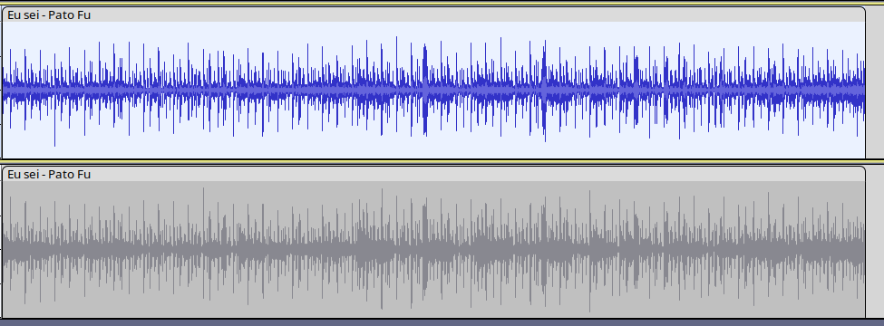
Nesse caso, parece que o grave está estourando no microfone de cima (AKG), não parece uma gravação muito agradável para esse tipo de música, mesmo a cantora utilizando (aparentemente) mais voz de peito, o que não deveria ser um problema aí. A música no geral parece ter um “flicking” de ruído, não sei se é proposital, mas pode-se ouvir aí um sonzinho de estática ao fundo (em ambos os microfones).
Características dos microfones
Shure SM57:
Tipo de microfone: Dinâmico. Padrão polar: Cardióide. Resposta de frequência: 40 Hz a 15 kHz. Sensibilidade: -56,0 dBV/Pa (1,6 mV). Impedância: 150 ohms. SPL máximo: 94 dB (a 1 kHz, 1% de THD). Conexão: XLR (3 pinos). Construção resistente e durável, adequada para uso em palco e estúdio. Amplamente utilizado para captura de instrumentos musicais, amplificadores de guitarra, caixas de som, bateria e vocal ao vivo.
AKG C214:
Tipo de microfone: Condensador. Padrão polar: Cardióide. Resposta de frequência: 20 Hz a 20 kHz. Sensibilidade: 20 mV/Pa. Impedância: 200 ohms. SPL máximo: 136 dB (para 0,5% de THD). Conexão: XLR (3 pinos). Filtro de corte de graves e atenuação de pad integrados (-20 dB). Ideal para gravação em estúdio, instrumentos musicais, vocais, overheads de bateria e aplicações de captação profissional.
Isso leva a:
Resposta de frequência:
O Shure SM57 tem uma resposta de frequência mais limitada, com corte nas frequências mais altas. Isso pode resultar em um som mais suave e menos brilhante, o que pode ser preferido para certos instrumentos ou vocais. O AKG C214, com sua resposta de frequência estendida e mais linear, tende a capturar sons mais ricos e detalhados, especialmente nas frequências mais altas. Isso pode torná-lo uma escolha mais versátil para diferentes fontes sonoras.
Sensibilidade:
O Shure SM57 é menos sensível em termos de saída de sinal, o que pode ser vantajoso para situações em que é necessário controlar o nível de volume ou para instrumentos de alto SPL (Sound Pressure Level). O AKG C214, sendo um microfone condensador, é mais sensível e captura detalhes sutis de maneira mais eficaz. No entanto, pode ser necessário ajustar o ganho ou a posição do microfone para evitar distorções em fontes sonoras muito altas.
Padrão polar:
Ambos os microfones têm padrão polar cardióide, o que significa que têm uma sensibilidade direcional e minimizam a captação de sons vindos das laterais e traseira do microfone. Isso ajuda a reduzir o ruído ambiente e o vazamento de outras fontes sonoras próximas. No entanto, o posicionamento do microfone e a direção de captação podem ser mais críticos com o Shure SM57, devido à sua resposta de frequência mais limitada.
Uso em instrumentos e vocais:
O Shure SM57 é frequentemente usado para instrumentos musicais como amplificadores de guitarra, caixas de som, bateria, entre outros. Sua resposta de frequência suavizada pode ser vantajosa para capturar fontes sonoras mais agressivas. O AKG C214 é mais comumente usado para gravação de vocais, instrumentos acústicos, overheads de bateria e outras fontes sonoras onde detalhes e clareza são valorizados.
Considerando a pesquisa feita e a análise subjetiva do som, acho que tudo que percebemos bate com as especificações técnicas dos microfones, sentimos que o AKG se encaixou melhor para partes da música onde havia apenas voz e poucos instrumentos, e que ele também não era muito bom para percussão, já no caso do Shure, sons mais agudos, agressivos e harmonizações pareciam mais interessantes.
[1] KEELE, D. B. Low-Frequency Loudspeaker Assessment by Nearfield Sound-Pressure Measurement. Journal of the Audio Engineering Society, [s. l.], 15 maio 1973.
[2] LINKWITZ, S. Models for a dipole loudspeaker design. In: Linkwitz Lab. [S. l.], 2000. Disponível em: https://www.linkwitzlab.com/models.htm. Acesso em: 6 ago. 2023.